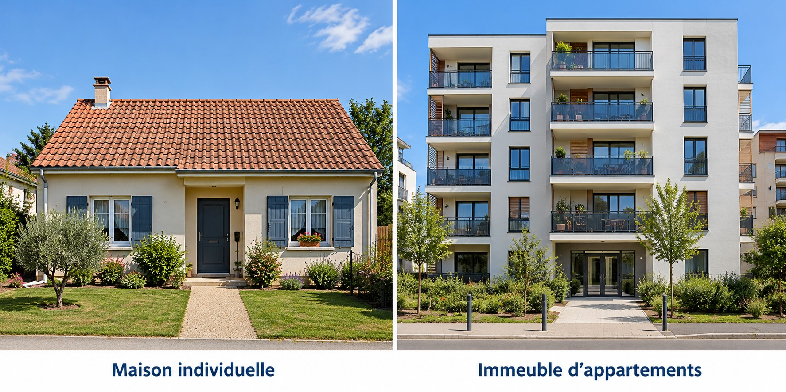

🦉 Maître Hibou · Géographie CE2 · Période 2 · GEOG-P2-02
🏠 Distinguer différentes formes d’habitat
Dans une ville, les habitants ne vivent pas tous dans les mêmes logements.

1. La maison individuelle
Une maison individuelle accueille généralement un seul foyer. Elle peut avoir un jardin.
2. L’habitat collectif
Un immeuble contient plusieurs logements : les appartements. Plusieurs familles peuvent y habiter.
3. Observer sans confondre
Une grande maison et un immeuble ne se distinguent pas seulement par leur hauteur : il faut aussi considérer le nombre de logements.
Je retiens
Une maison individuelle et un immeuble d’appartements sont deux formes d’habitat différentes.